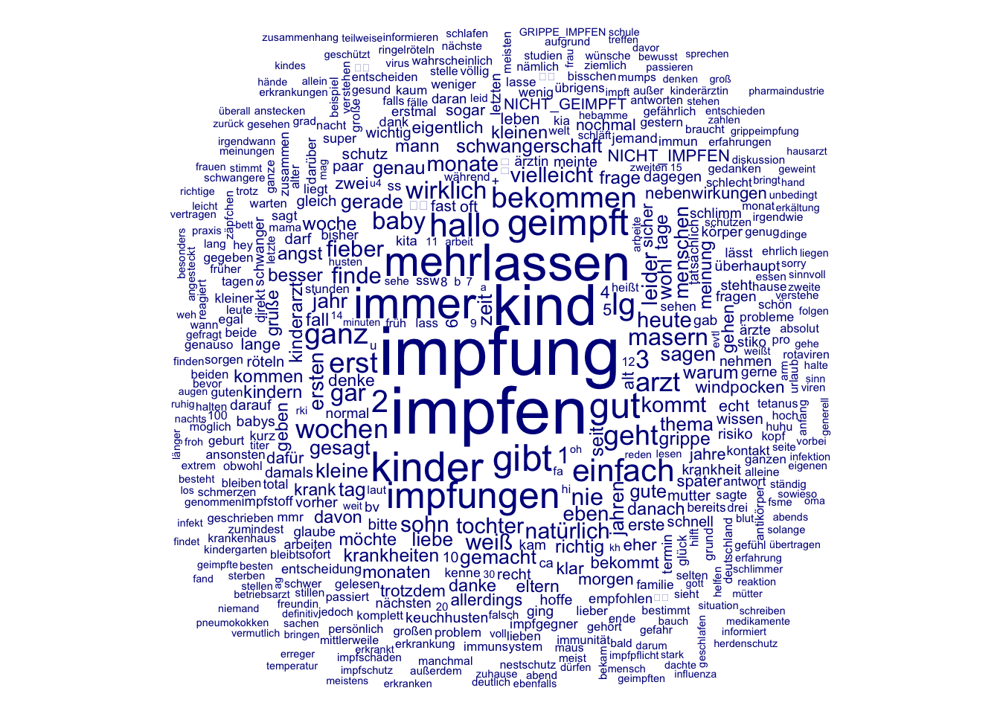

Abschnitt 2 Beispiel-Daten und Aufbereitung
2.1 Laden der Daten und Übersicht
- Wir verwenden einen Ausschnitt der Daten aus der Beispielstudie. Konkret handelt es sich um Posts mit dem Suchwort impf, die zwischen dem 1. Mai 2016 und dem 8. Juli 2019 im Elternforum Urbia veröffentlicht wurden. Ausgeschlossen wurden unter anderem
- sehr kurze Posts (weniger als 19 Wörter)
- Posts mit dem Wort schimpf
- Posts zur Impfung von Haustieren (nach einem kurzen Diktionär)
- Die Dokumentation zur Studie gibt weitere Informationen zur Erhebung und Bereinigung der Rohdaten.
- Diese Daten können aus Copyright- und Privacy-Gründen nicht auf GitHub veröffentlicht werden. Ich habe Sie daher im LMS hochgeladen. Bitte ladet die ZIP-Datei herunter.
- Wenn ihr sie mit dem Code aus dem Repository integrieren wollt, müsst ihr sie in den Ordner “data” unter “R” entpacken.
## # A tibble: 12,369 x 5
## post author postdate wc thread_title
## <chr> <chr> <date> <int> <chr>
## 1 Wenn Impfungen zu Todesfäll… zwerg-b… 2018-04-06 26 HPV-Impfung
## 2 Hallo Moni Danke für deine … Inaktiv 2017-06-03 21 Warum so oft Scheidenp…
## 3 Hallo ja sind glaube ich dr… danerl 2017-06-05 42 Warum so oft Scheidenp…
## 4 Guten Morgen, gibt es hier … butterf… 2017-05-14 133 Impfung Deutschland/Ös…
## 5 In Österreich wird im 3., 5… butterf… 2017-05-15 68 Impfung Deutschland/Ös…
## # … with 1.236e+04 more rows
## Min. 1st Qu. Median Mean 3rd Qu. Max.
## 20 37 60 85 101 2493- Der Datensatz besteht aus 12,369 Posts.
- Die Variable
postenthält den vollen Text des Posts. - Die Variable
authorenthält den Accountnamen, von dem der Post abgegeben wurde. - Die Variable
dateenthält den Tag der Veröffentlichung. - Die Variable
wcenthält die Zahl der Wörter des Posts. - Die Variable
thread_titleenthält den Titel des Diskussions-Threads.
- Die Variable
- Pro Monat sind zwischen ca. 120 und 1.000 Posts in unserer Stichprobe.
- Typische Posts haben einen Umfang von zwischen 40 und 100 Wörtern (Zur Erinnerung: Sehr kurze Post wurden bereits ausgeschlossen).
2.2 Aufbereitung für das Schätzen der Topic Models
- Grundsätzlich gilt: Die verschiedenen Schritte bei der Aufbereitung des Text-Korpus kann die Ergebnisse wesentlich beeinflussen (Denny and Spirling 2018; Maier et al. 2018). Aber ist es häufig sehr schwierig, theoretisch informierte Entscheidungen zu treffen, da
- unsere Theorien fast immer zu vage sind, um etwas über konkrete, manifeste Eigenschaften der Texte auszusagen
- es schwer ist, die Folge einer Entscheidung für das technische Schätzen der Modelle und für die substanzielle Interpretation der Ergebnisse vorherzusagen,
- Entscheidungen post hoc auf Basis der Ergebnisse wissenschaftstheoretisch und -praktisch problematisch sein können (overfitting, harking bzw. hindsight bias, etc.).
- In der zugrunde liegenden Studie habe ich versucht, diese Entscheidungen a priori zu treffen. Die Entscheidungen basieren aber zugegebenermaßen mehr auf vagen Vermutungen und für mich plausiblen und pragmatischen Überlegungen als auf einer konsistenten Theorie.
- Entfernen von Stoppwörtern: Stoppwörter sind Wörter, die in einer Sprache häufig vorkommen und nicht wesentlich zur Bedeutung eines Texts beitragen. Hier habe ich auf Basis der deutschen Liste im Paket
{stopwords}und der Worthäufigkeiten im Korpus eine Liste erstellt. Durch das Pruning der Dokument-Feature-Matrix (siehe unten) ist die Auswahl der Stoppwörter aber weniger entscheidend, da Wörter, die in sehr vielen Texten des Korpus vorkommen, ohnehin entfernt werden. - Zusätzliche Berücksichtigung von Bi- und Tri-Grammen: Ich habe die Kombinationen von zwei oder drei Wörtern, die häufig im Korpus vorkamen, daraufhin gesichtet, ob sie für das Thema Impfen und gesundheitsrelevante Diskussionen zusätzliche Informationen enthalten, die jedes einzelne Wort alleine nicht enthält. Diese Kombinationen wurden als zusätzliche Features aufgenommen.
- Der Argumentation und den empirischen Ergebnissen von Schofield and Mimno (2016) (deren Aufsatz übrigens einen großartigen Titel hat, großer NLP Nerd Humor) folgend habe ich auf Stemming oder Lemmatisierung verzichtet. In der Tat zeigt sich, dass Wörter mit dem gleichen Wortstamm, wie von Schofield and Mimno (2016) beschrieben, häufig im selben Topic landen.
- Üblichen Standards (z.B. Maier et al. 2018) folgend habe ich alle Wörter in Kleinschreibung umgewandelt, Satzzeichen entfernt und URL entfernt. Zahlen habe ich beibehalten, da sie (wie die Ergebnisse auch zeigen) typische Merkmale bestimmter Perspektiven auf das Thema Impfen sind.
- Da wir auch an der Veränderung der Topic-Häufigkeiten über die Zeit interessiert sind, wird die Variable mit dem Erscheinungstags des Posts in eine numerische Variable umgewandelt. Sie ist so skaliert, dass der aktuellste Post den Wert 0 hat. Diese Variable können wir dann als Prädiktor beim Schätzen des Structural Topic Model berücksichtigen.
- Unter Pruning versteht man das Entfernen von Features, die entweder in sehr weniger oder in sehr vielen Dokumenten vorkommen. Dadurch können die Größe des Datensatzes und in der Folge die zum Schätzen der Modelle nötigen Ressourcen wesentlich reduziert werden. Inhaltlich sollte das Entfernen dieser Features wenig ändern: Features, die in sehr vielen Dokumenten vorkommen, tragen nicht zur Differenzierung zwischen den Dokumenten bei. Features, die nur in sehr wenigen Dokumenten vorkommen, tragen nicht zur Definition von Topics bei, da diese durch das regelmäßige gemeinsame Vorkommen in Dokumenten identifiziert werden. Siehe ausführlich Maier et al. (2018).
- Entfernen von Stoppwörtern: Stoppwörter sind Wörter, die in einer Sprache häufig vorkommen und nicht wesentlich zur Bedeutung eines Texts beitragen. Hier habe ich auf Basis der deutschen Liste im Paket
- Die Vorbereitung des Korpus und der Dokument-Feature-Matrix erfolgte mit Funktionen aus
{quanteda}.- Mit der Funktion
corpus()wird der Datensatz in einen Text-Korpus umgewandelt. In diesem Zuge wird auch die numerische Datums-Variable erstellt. Die Variable mit dem Text des Posts duplizieren wir, damit sie zusätzlich als Meta-Datum für jeden Text gespeichert wird. Das wird später hilfreich sein, wenn wir die Ergebnisse einer Modellschätzung explorieren. custom_stopwordsundrelevant_ngramszeigen die Stoppwörter und Wortkombinationen, die ausgeschlossen bzw. einbezogen werden. Letztere werden mit der Funktiondictionary()aus{quanteda}erstellt.- Mit der Funktion
dfm()wird der Korpus in eine Dokument-Feature-Matrix umgewandelt. Dabei werden die Standard-Schritte der Textaufbereitung durchgeführt. Sie besteht aus 12,369 Posts in den Zeilen und 41,385 Features in den Spalten. In jeder Zelle ist angegeben, wie häufig ein Feature in einem Dokument vorkommt. - Mit der Funktion
dfm_trim()wird das Pruning durchgeführt. Dabei werden alle Features, die in weniger als 0.5% oder mehr als 99% der Posts vorkommen, entfernt. Nach dem Pruning enthält die Matrix nur noch 1,150 Features. - Zuletzt muss die Matrix in das von
stm()benötigte Format konvertiert werden. Dabei werden zwei Posts gelöscht, die nach der Bereinigung kein einziges Feature mehr enthalten. Wichtig für den Bericht der Fallzahl in einer Publikation!
- Mit der Funktion
- Am Ende seht ihr eine einfache Beschreibung der häufigsten Features im Korpus als Tabelle und Wordcloud.
# Erstellen des Korpus
crps = d %>%
mutate(txt = post, # Duplizieren des Post-Texts für Meta-Daten
date_num = as.numeric(postdate) - max(as.numeric(postdate))) %>% # Numerische Datumsvariable
corpus(text_field = "post") # Erstellen des Korpus
crps %>%
summary(n = 1)## Corpus consisting of 12369 documents, showing 1 document:
##
## Text Types Tokens Sentences author postdate wc thread_title
## text1 27 29 2 zwerg-bayern 2018-04-06 26 HPV-Impfung
## txt
## Wenn Impfungen zu Todesfälle oder starken Nebenwirkungen in einzelnen Fällen führen, spricht dann für Immungschwäche oder schlummernder Krankheit. Ein gesunder Mensch stirbt nicht an der Impfung.
## date_num
## -457# Stoppwörter
custom_stopwords = c("ab", "aber", "ach", "all", "alle", "allem", "allen", "aller", "alles", "als", "also", "am", "an", "andere", "anderen", "anderes", "anders", "auch", "auf", "aufs", "aus", "bei", "beim", "bin", "bis", "bist", "bzw", "da", "dabei", "dadurch", "daher", "dahin", "damit", "dann", "das", "dass", "daß", "dazu", "dein", "deine", "deinem", "deinen", "deiner", "dem", "den", "denen", "denn", "dennoch", "der", "deren", "des", "deshalb", "deswegen", "dich", "die", "dies", "diese", "diesem", "diesen", "dieser", "dieses", "dir", "doch", "dort", "dran", "drauf", "drin", "drüber", "du", "durch", "durchaus", "eh", "ein", "eine", "einem", "einen", "einer", "eines", "einige", "einigen", "einiges", "einmal", "er", "es", "etc", "etwas", "euch", "euer", "eure", "euren", "für", "fürs", "gegen", "gehabt", "getan", "gewesen", "geworden", "hab", "habe", "haben", "habt", "halt", "hast", "hat", "hatte", "hätte", "hatten", "hätten", "her", "hier", "hin", "hinter", "ich", "ihm", "ihn", "ihnen", "ihr", "ihre", "ihrem", "ihren", "ihrer", "im", "in", "ins", "is", "ist", "ja", "je", "jede", "jedem", "jeden", "jeder", "jedes", "jetzt", "kann", "kannst", "kein", "keine", "keinem", "keinen", "keiner", "können", "könnt", "konnte", "könnte", "könnten", "mach", "mache", "machen", "machst", "macht", "mal", "man", "manche", "mein", "meine", "meinem", "meinen", "meiner", "meines", "mich", "mir", "mit", "muss", "müssen", "musst", "musste", "müsste", "mussten", "na", "nach", "nachdem", "naja", "ne", "nein", "nem", "nen", "ner", "nicht", "nichts", "nix", "noch", "nun", "nur", "ob", "oder", "ohne", "ok", "okay", "raus", "rein", "rum", "schon", "sehr", "sei", "seid", "sein", "seine", "seinem", "seinen", "seiner", "selber", "selbst", "sich", "sie", "sind", "so", "solche", "solchen", "soll", "sollen", "sollte", "sollten", "solltest", "somit", "sondern", "sonst", "sowas", "soweit", "tun", "tut", "über", "um", "und", "uns", "unser", "unsere", "unserem", "unseren", "unserer", "unter", "usw", "viel", "viele", "vielen", "vieles", "vom", "von", "vor", "war", "wäre", "waren", "wären", "wars", "was", "weder", "weg", "wegen", "weil", "weiter", "weitere", "welche", "welchen", "welcher", "welches", "wenn", "wenns", "wer", "werd", "werde", "werden", "wie", "wieder", "wieso", "will", "willst", "wir", "wird", "wirst", "wo", "wobei", "wollen", "wollte", "wollten", "worden", "wurde", "würde", "wurden", "würden", "z.b", "zb", "zu", "zum", "zur", "zwar", "zwischen")
# Kombinationen von Wörtern
relevant_ngrams = dictionary(list(
"trotz_impfung" = "trotz impfung",
"grippe_impfen" = "grippe impfen",
"mmr_impfung" = "mmr impfung",
"hepatitis_b" = "hepatitis b",
"gut_vertragen" = "gut vertragen",
"6fach_impfung" = "6fach impfung",
"6_fach" = "6 fach",
"6_fach_impfung" = "6 fach impfung",
"meningokokken_b" = "meningokokken b",
"gute_besserung" = "gute besserung",
"6-fach_impfung" = "6-fach impfung",
"erhöhte_temperatur" = "erhöhte temperatur",
"kein_fieber" = "kein fieber",
"kein_problem" = "kein problem",
"keine_ahnung" = "keine ahnung",
"keine_impfung" = "keine impfung",
"nicht_geimpft" = "nicht geimpft",
"nicht_impfen" = "nicht impfen",
"nicht_zu_impfen" = "nicht zu impfen",
"selbst_entscheiden" = "selbst entscheiden"
))
# Erstellen einer Dokument-Feature-Matrix aus dem Korpus
impf_dfm = crps %>%
dfm(stem = FALSE, tolower = TRUE, remove_punct = TRUE,
remove = custom_stopwords,
remove_url = TRUE, verbose = TRUE,
thesaurus = relevant_ngrams)## Creating a dfm from a corpus input...## ... lowercasing## ... found 12,369 documents, 41,651 features## ... applying a dictionary consisting of 20 keys
## ... removed 286 features## Document-feature matrix of: 12,369 documents, 41,385 features (99.9% sparse) and 6 docvars.
## features
## docs TROTZ_IMPFUNG GRIPPE_IMPFEN MMR_IMPFUNG HEPATITIS_B GUT_VERTRAGEN
## text1 0 0 0 0 0
## text2 0 0 0 0 0
## text3 0 0 0 0 0
## text4 1 0 0 0 0
## text5 0 0 0 0 0
## text6 0 0 0 0 0
## features
## docs 6FACH_IMPFUNG 6_FACH 6_FACH_IMPFUNG MENINGOKOKKEN_B GUTE_BESSERUNG
## text1 0 0 0 0 0
## text2 0 0 0 0 0
## text3 0 0 0 0 0
## text4 1 0 0 0 0
## text5 0 0 0 0 0
## text6 0 0 0 0 0
## [ reached max_ndoc ... 12,363 more documents, reached max_nfeat ... 41,375 more features ]# Pruning
impf_dfm = impf_dfm %>%
dfm_trim(max_docfreq = 0.99, min_docfreq = 0.005, docfreq_type = "prop")
impf_dfm## Document-feature matrix of: 12,369 documents, 1,150 features (98.2% sparse) and 6 docvars.
## features
## docs TROTZ_IMPFUNG GRIPPE_IMPFEN MMR_IMPFUNG GUT_VERTRAGEN 6_FACH
## text1 0 0 0 0 0
## text2 0 0 0 0 0
## text3 0 0 0 0 0
## text4 1 0 0 0 0
## text5 0 0 0 0 0
## text6 0 0 0 0 0
## features
## docs MENINGOKOKKEN_B GUTE_BESSERUNG ERHÖHTE_TEMPERATUR KEIN_FIEBER
## text1 0 0 0 0
## text2 0 0 0 0
## text3 0 0 0 0
## text4 0 0 0 0
## text5 0 0 0 0
## text6 0 0 0 0
## features
## docs KEIN_PROBLEM
## text1 0
## text2 0
## text3 0
## text4 0
## text5 0
## text6 0
## [ reached max_ndoc ... 12,363 more documents, reached max_nfeat ... 1,140 more features ]# Überblick: Die häufigsten Features im Korpus
impf_dfm %>%
colSums() %>%
enframe() %>%
arrange(desc(value)) %>%
slice(1:20) %>%
kable()| name | value |
|---|---|
| impfung | 4519 |
| impfen | 4356 |
| kind | 3690 |
| lassen | 3257 |
| immer | 2705 |
| mehr | 2594 |
| kinder | 2503 |
| gibt | 2184 |
| geimpft | 2176 |
| impfungen | 2174 |
| gut | 2115 |
| hallo | 1898 |
| einfach | 1767 |
| lg | 1720 |
| 2 | 1704 |
| bekommen | 1585 |
| ganz | 1584 |
| erst | 1558 |
| geht | 1492 |
| arzt | 1411 |

## Warning in dfm2stm(x, docvars, omit_empty = TRUE): Dropped empty document(s):
## text12225, text12271Literatur
Denny, Matthew J., and Arthur Spirling. 2018. “Text Preprocessing for Unsupervised Learning: Why It Matters, When It Misleads, and What to Do About It.” Political Analysis 26 (2): 168–89. https://doi.org/10.1017/pan.2017.44.
Maier, Daniel, A. Waldherr, P. Miltner, G. Wiedemann, A. Niekler, A. Keinert, B. Pfetsch, et al. 2018. “Applying LDA Topic Modeling in Communication Research: Toward a Valid and Reliable Methodology.” Communication Methods and Measures 12 (2-3): 93–118. https://doi.org/10.1080/19312458.2018.1430754.
Schofield, Alexandra, and David Mimno. 2016. “Comparing Apples to Apple: The Effects of Stemmers on Topic Models.” Transactions of the Association for Computational Linguistics 4 (December): 287–300. https://doi.org/10.1162/tacl_a_00099.